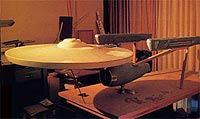
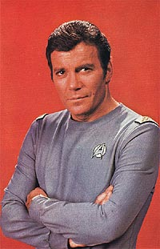
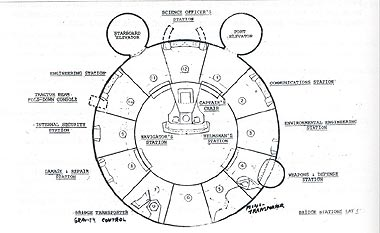
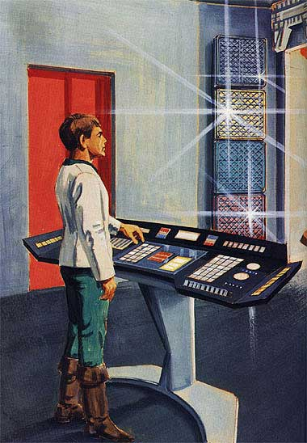
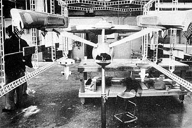
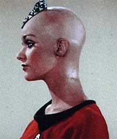
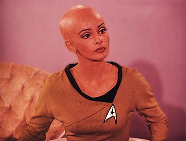

|

|
Seguindo um conselho
do produtor de Jornada nas Estrelas: Fase II Robert Goodwin,
de tentar escrever um roteiro para o episdio-piloto com um tema
nunca explorado nas trs temporadas de Srie Clssica,
Alan Dean Foster apresentou para Gene Roddenberry um roteiro que,
se tinha semelhanas com o episdio "The Changeling",
contava com um tema quase indito em Jornada nas Estrelas
at ento: ameaa ao planeta Terra.    Na nova engenharia grande parte do servio j estava concludo. O piso e as paredes estavam no lugar, assim como alguns arranjos internos. As plantas da sala de reunies do comando da Enterprise estavam prontas, e a construo iria comear em breve. O novo design da sala de transportes, criado por Mike Minor, estava apenas aguardando a aprovao de Roddenberry para comear a ser construdo.  Como o roteiro de Alan Dean Foster modificado por Gene e demais produtores pedia a presena da Enterprise em reforma na rbita da Terra, os designers Mike Minor e Joe Jennings trataram de criar uma doca seca orbital, que contaria com um escritrio acoplado nela. Mais tarde o tal escritrio foi retirado, e um casulo de transporte que traria Kirk para a nave foi criado.   Em 26 de setembro o David Gautreaux foi contratado para interpretar Xon, o substituto de Spock. Um ms depois, em 28 de outubro, foi a vez de Persis Khambatta, ex-Miss ndia, ser contratada para viver Ilia. Com Shatner a bordo, ficavam dvidas se o personagem Willard Decker continuaria existindo. Ningum ainda havia sido contratado para o papel. Em compensao, a contratao da dupla acabou com os rumores de que a Fase II seria engavetada.E como esses rumores surgiram? Bem, a Paramount era, e ainda , um dos maiores estdios de Hollywood. Todos por l sabiam a importncia de cumprir prazos, compromissos e datas de lanamento de filmes e agora, sries de televiso. Mas a Fase II havia estourado todas as datas, prazos e compromissos at ento, e o mais interessante que ningum da produo estava sendo pressionado quanto a isso. Era uma situao paradoxal. Embora os roteiristas tenham levado alguns meses para desenvolver o roteiro original de Alan Dean Foster, quando geralmente esse trabalho era feito no mximo em duas semanas, ningum os pressionava. Os sets de filmagem estavam pela metade, o modelo da Enterprise e da doca espacial tambm estavam inacabados e, ao final de ms de outubro, com 28 de novembro j marcado para ser o primeiro dia das filmagens, o personagem Decker ainda no tinha intrprete. Qual a explicao para tudo isso? Simples. Os executivos da Paramount no iriam pressionar a produo da Fase II para agilizar o servio, pois havia a possibilidade de que a srie nem fosse realizada, afinal ela seria o carro-chefe da nova emissora de televiso que a Paramount lanaria, e talvez nem isso acontecesse to cedo. Hoje em dia sabemos que de fato a UPN (United Paramount Network), programada para estrear em 1978, s viria a ser lanada em 16 de janeiro de 1995, tendo Voyager como seu carro-chefe. Gene sabia que uma nova srie do universo de Jornada estrearia a nova emissora do estdio, mas no poderia jamais imaginar que demoraria pelo menos 17 anos e ele no estaria vivo para ver. Os cenrios estavam sendo construdos, figurinos sendo costurados, atores sendo contratados, roteiros sendo escritos (e reescritos), Bill Shatner havia acertado para voltar ao seu papel de Kirk, Nimoy estava fora mas David Gautreaux e seu Xon iriam tentar suprir a ausncia do Vulcano, uma ex-Miss estaria na srie como uma nova personagem e o tal Decker era uma incgnita. Treze roteiros para a primeira temporada estavam sendo desenvolvidos.  Em janeiro de 1978, o que era esperado aconteceu. A Paramount no lanaria sua emissora, e isso queria dizer que a Fase II estava morta. Mas para no jogar no lixo meses de trabalho e muito dinheiro gasto na pr-produo da nova encarnao de Jornada, o estdio anunciou que estava em negociaes com Leonard Nimoy e com o diretor Robert Wise para o lanamento de "Jornada nas Estrelas: O Filme". A misso de Gene agora era transformar o episdio-piloto "In Thy Image" em um filme de duas horas para o cinema... |

Antes: Ressurreio
da srie
A seguir: Da telinha telona